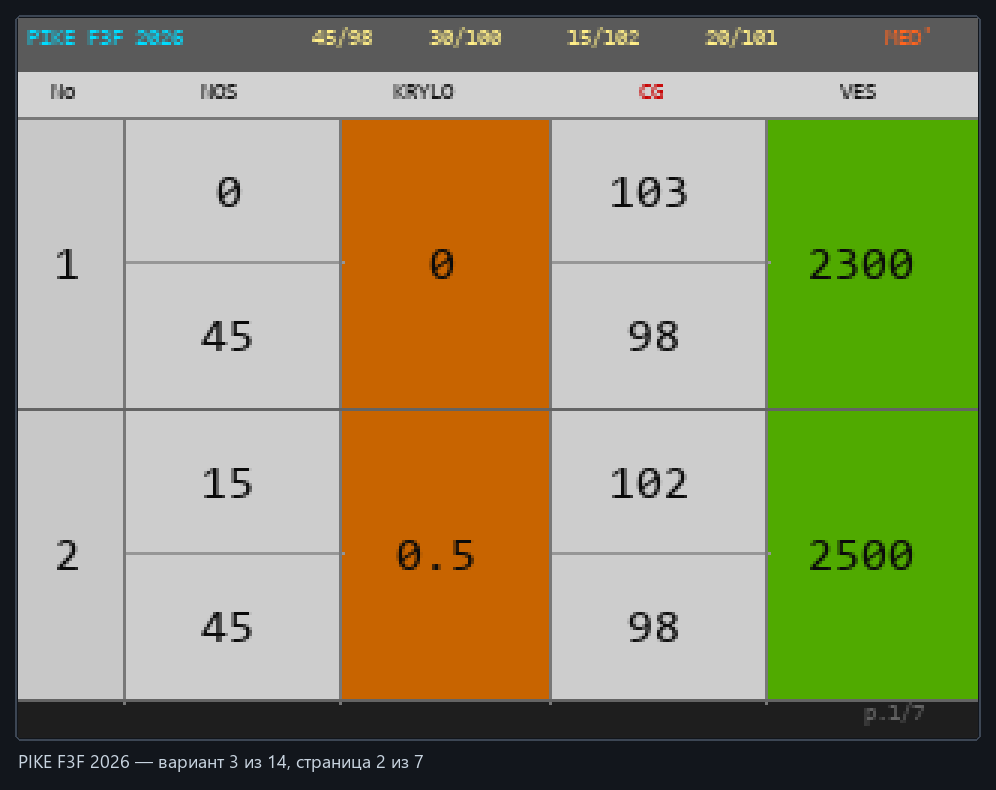
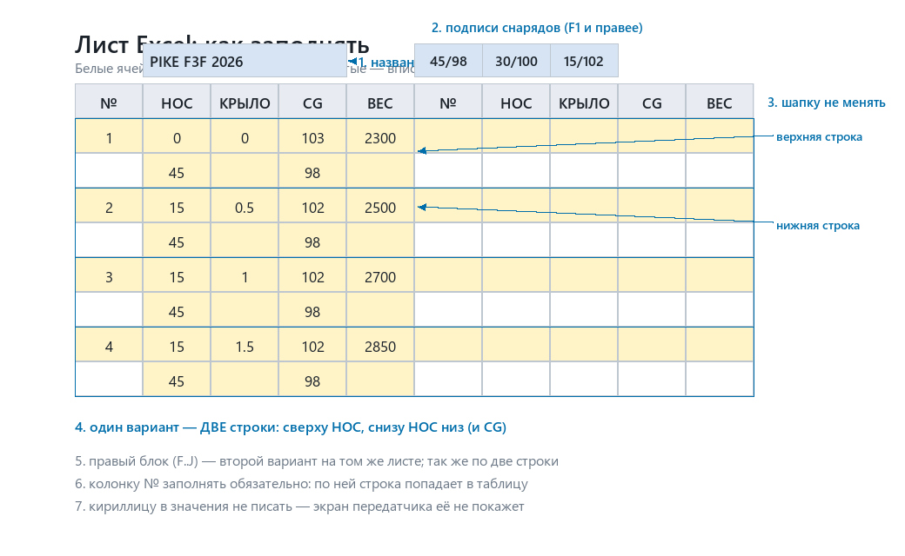
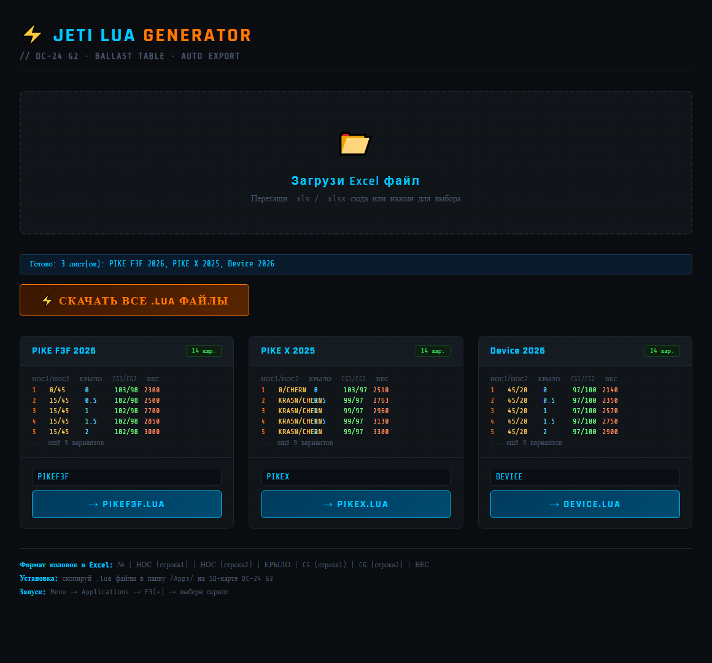
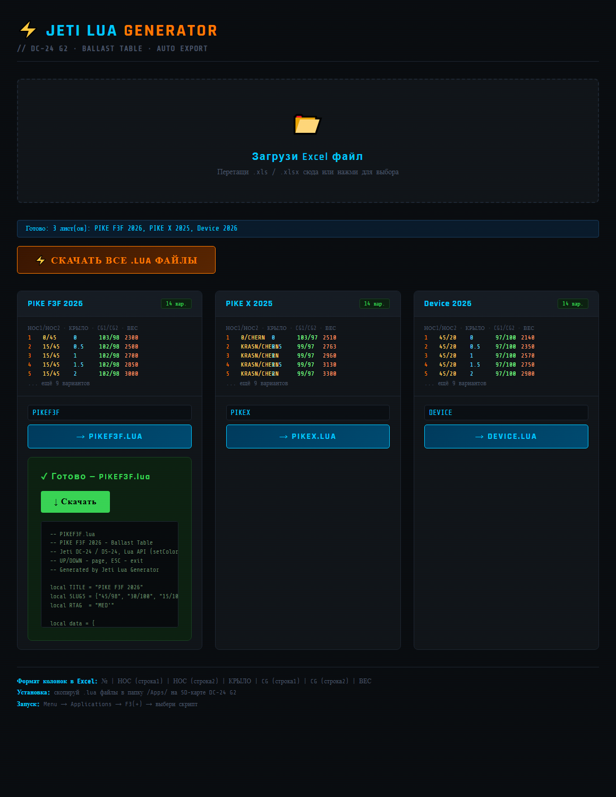

Берёт Excel-таблицу с вариантами загрузки и делает готовое Lua-приложение для передатчика Jeti DC-24 / DS-24. Ничего устанавливать не нужно — генератор работает в браузере.
№ / НОС / КРЫЛО / CG / ВЕС — по два варианта на страницу, листание кнопками UP / DOWN.
Заполнил таблицу, перетащил файл в генератор, получил скрипт. Без правки кода руками.
Передатчик не умеет отображать русские буквы — значения автоматически переводятся в латиницу.

№ | НОС | КРЫЛО | CG | ВЕС.
Дальше — по две строки на вариант: сверху НОС верх, снизу НОС низ.

.xls или .xlsx в пунктирную рамку.

PIKEF3F.lua. Имя можно поправить в поле перед кнопкой —
нужно не больше 8 символов латиницей: PIKEF3F, PIKEX, DEVICE26.
Кнопка «Скачать все» отдаёт сразу все модели.

/Apps/ на карте передатчика. Затем на передатчике:
Menu → Applications → выбрать скрипт. UP / DOWN — страницы, ESC — выход.
| Где | Что там |
|---|---|
B1 | Название модели — попадёт в шапку экрана и в имя файла |
F1 и правее | Подписи снарядов: 45г/98, 30г/100 |
| Строка 2 | Шапка: № | НОС | КРЫЛО | CG | ВЕС, слева (A..E) и справа (F..J) |
| Строка 3 и далее | Две строки на вариант: верхняя — замер, нижняя — второй нос/CG |
Один лист вмещает два варианта в ряд: левый блок с колонки A, правый — с колонки F.
Листы без колонки № (например «Расчет») генератор пропускает.
красный → KRASN, черный → CHERN,
подписи вида 45г/98 → 45/98.
Открыть генератор в браузере. Нужен интернет только для шрифтов, всё остальное локальное.
Скачай jeti_lua_generator.html
и открой двойным щелчком. Библиотека Excel подтянется с CDN, если нет — положи рядом
xlsx.full.min.js из архива.
python tools/generate.py таблица.xls output — тот же результат без браузера.
Нужны Python и xlrd.
| Симптом | Причина и что делать |
|---|---|
| На экране пусто вместо названия | В названии модели кириллица. Пиши латиницей: PIKE X 2025. |
| Строка не попала в таблицу | Пустая колонка № — по ней генератор находит вариант. |
| Скрипт не появился в Applications | Файл должен лежать в /Apps/ на SD-карте, имя — до 8 символов, расширение .lua. |
Ошибка attempt to call nil |
Скрипт собран для другого API. Перегенерируй этим генератором — он использует только существующие функции Jeti. |